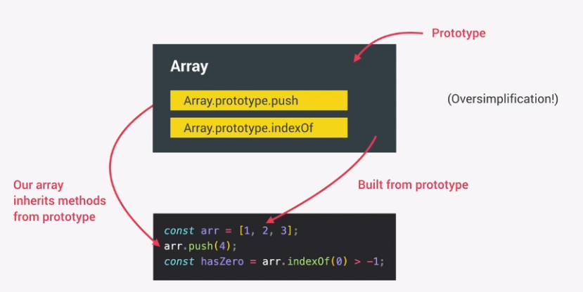

Do not have to manage resources (memory) manually. The downside is that these programs are never as fast as low level programs.
Algorithm within JS that automatically removes old unused objects from memory.
###############
An approach and mindset of structuring code, which will direct your coding style and technique.
3 paradigms are:
Paradigms are also Imperative or Declarative.
Most languages only use one of these paradigms. This makes it very flexible and versatile.
Everything is an Object in JS except primatives.
For example, you can use the .push() method on an Array due to Prototypal Inheritance.
This means you create an Array from an existing prototype (blueprint) which contains all the Array methods.
The Arrays you create then inherit these methods.
This means functions are treated like variables.
You can pass them into other functions and return them from functions.
You do not assign data types to variables.
The JS engine decides this when you execute your code.
The variables types can be changed as you reassign them.
If you want to use JavaScript with types, you could use TypeScript.
Concurrency model: How the JS engine handles multiple tasks at the same time.
JS runs in one single thread, so it can only do one thing at a time.
Used for long-running tasks so the single event does not stop other processes.
The event loop takes long running tasks, executes them in the background, and puts them back in the main thread once they are finished.